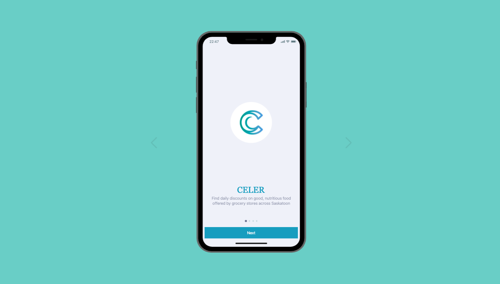

CELER
Overview
CELER is a food waste prevention app that directs users to local grocery stores offering discounts on foods nearing the end of their shelf life. The concept was developed for EcoHack, a sustainability-focused hackathon that sought to find creative solutions to real problems in the City of Saskatoon. I had three days to come up with an idea, sketch a protype, and create a video pitch. CELER was shortlisted by a panel of judges and voted first place by the City of Saskatoon. I was awarded a $1000 grand prize.
Problem Statement
In Saskatoon, a pressing local challenge exists as perfectly good food gets discarded, while a significant portion of the community grapples with food insecurity. This paradoxical situation highlights the urgency of tackling both food waste and affordability issues within our city. a substantial amount of edible food is discarded due to overstocking, nearing expiration dates, or cosmetic imperfections. Meanwhile, many people struggle to afford food, underscoring the disconnect between available resources and their accessibility. Addressing this challenge requires an innovative solution that not only minimizes food waste but also ensures equitable food distribution, promoting a more sustainable and inclusive future for Saskatoon.
Key Features
- Location-based Search: CELER identifies nearby grocery stores participating in the discount program, making it easy for users to access these deals.
- Real-time Updates: The app continuously updates the list of discounted items, ensuring users have access to the latest information and opportunities.
- Product Details: Users can view detailed information about each item: original price, discounted price, expiration date, nutritional information, etc.
- Notifications: Users can opt to receive notifications when new discounts are available.
- Community Engagement: The app enables users to share their own discoveries and tips for reducing food waste.
Design
The app is designed to be simple and intuitive. The home screen features a list of nearby grocery stores offering discounted goods. Users view the store's address and browse its deals. They can then click on specific items to view more details. Since this app is meant for everyday use, it is important to keep the interface clean and uncluttered. The app is designed to be simple and intuitive. The home screen features a list of nearby grocery stores offering discounted goods. Users view the store's address and browse its deals. They can then click on specific items to view more details. I used Figma to create the prototype, and made efforts to keep the interface clean and uncluttered.
Takeaways

CELER is a simple yet powerful solution to the problem of food waste
and food insecurity. It is a win-win for both consumers and
businesses. Consumers can save money on groceries, while businesses
can reduce their food waste and increase their revenue.
At the time of this project, I was still debating
between majors, and contemplated pursuing a career in software
development. CELER not only piqued my interest in computer science,
but also taught me the importance of using technology to solve
real-world problems. Software is ubiquitious in our lives, and I
believe it is our responsibility as developers to use it for good.
Projects that encourage creativity and innovation are a great way to
get students excited about technology and its potential to make a
positive impact on the world.